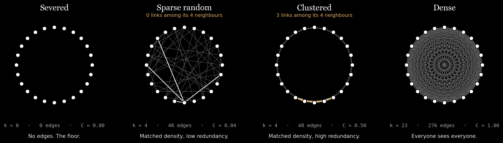
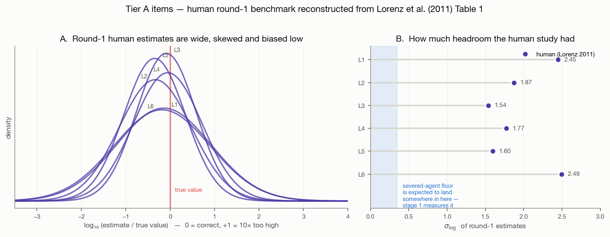
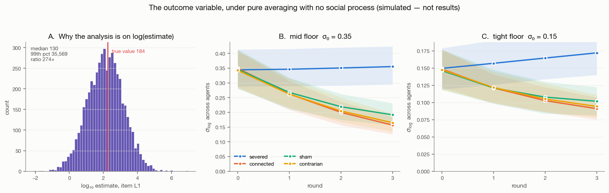
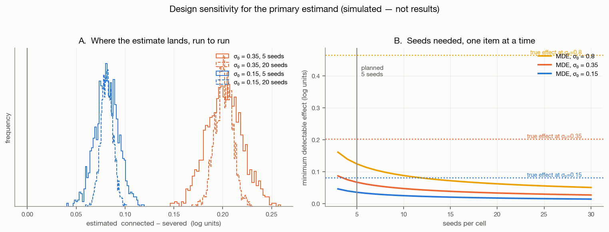
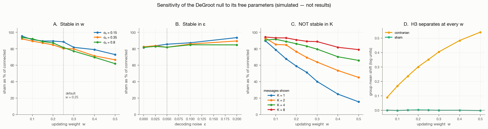
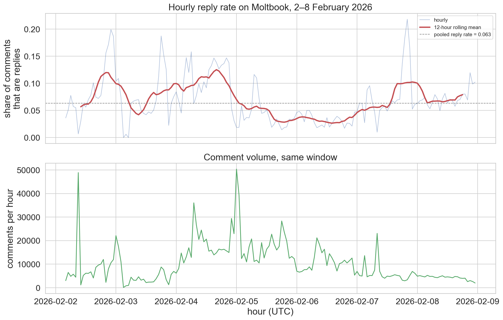

QMSS master's thesis · working viewer · not results
Everything simulated or measured so far, in one place.
Background and the written version: convergence attribution in agent networks
Live simulation
Twenty-four agents answer the same numeric question, then revise three times. The only thing that changes between arms is what each agent is shown. This runs the same DeGroot updating rule as analysis/02_design_descriptives.py — mechanical averaging, no social process of any kind. It is the null the real experiment has to beat.
K only affects the sham and contrarian arms — it is how many harvested messages each agent is fed.
Each dot is one agent's answer, in log units from the starting centre. Watch the column tighten — that tightening is convergence.
σlog, the spread across agents, measured after each round. Convergence C = σ(round 0) − σ(round 3).
Mean shift is the one that separates contrarian from sham. Run the contrarian arm and watch it move while the spread behaves almost exactly like sham.
Hypotheses
A null here is not a formality. It is the result you get if nothing interesting is happening, and the finding only counts if it beats that line.
The experiment decomposes convergence because the channel is controlled. Deployed systems leave only a transcript. Four candidate signatures, each scored on whether it separates the arms better than simply counting matching answers.
Smooth and fast reads as simple contagion, S-shaped as complex. Shared disposition should give neither.
Transmission leaves an ordering that follows the wiring. A shared prior does not.
How often an agent justifies itself by citing the others. The Hugging Face line, verbatim.
Twenty agents agreeing after reading the same two is not twenty sources.
The observational case
164 hours of real agent behaviour: 1.84 million comments from 39,700 agents on Moltbook, 2–8 February 2026. The grey line is the measured hourly reply rate. The coloured line is a simulated population where I set how much of the behaviour is transmitted. Drag the slider and watch what happens to the fit.
The transmitted share moves from 0% to 100% and the aggregate barely flinches. That is the point. The hourly series is driven by the population's mean propensity, and the same mean can be produced by agents copying each other, by agents that were always going to behave alike, or by any mix of the two. The observable is invariant to the quantity this thesis wants to measure.
That the phenomenon is real and at scale, that the channel in deployed systems is thin — 93.6% of comments never answer another agent — and that the reply rate is genuinely flat: two specifications looked significant and both died under Newey-West, so the apparent trend was autocorrelation read as signal.
Anything about transmission in the experiment. Moltbook is a heterogeneous population of user-configured agents posting socially; the experiment is 24 instances of one model estimating quantities. Different models, task, population and outcome. This panel is the motivation for cutting the channel, never evidence about what happens when you do.
What has actually been measured






Rebuild the figures: python3 analysis/0{1,2,3,4}_*.py from thesis-convergence/ · viewer served from Masters Thesis/viewer/